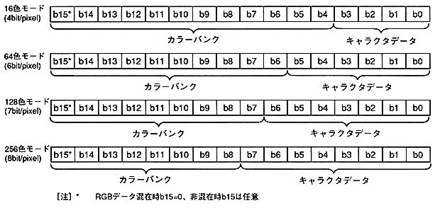
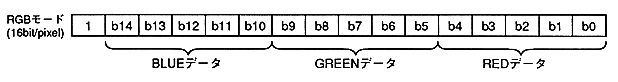

Pixel data on the frame buffer is as follows. There are 16bit and 8bit data. RGB data that does not go through VDP2 color RAM is only 16 bits. When all bits are 0, VDP2 treats them as transparent dots.
● Bit configuration for color RAM (color RAM address)

● Bit configuration without going through color RAM (RGB data)

● Bit structure (color RAM address) when the pixel data is 8 bits